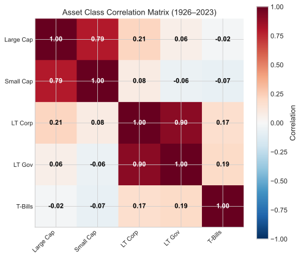
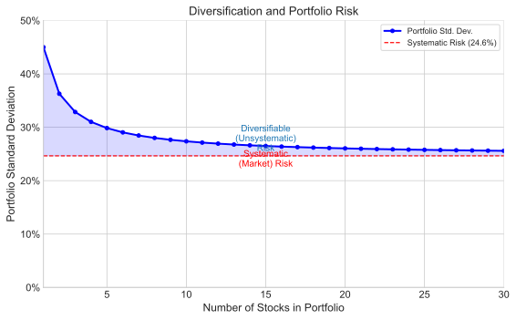
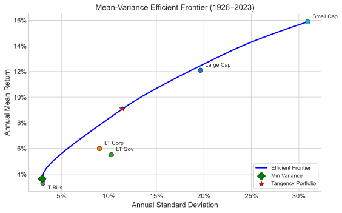
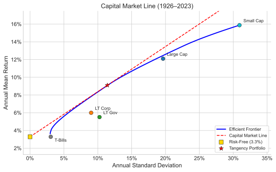

Chapter II
The Geography of the Efficient Frontier
Portfolio diversification, the Markowitz model, and the Capital Market Line.
I. The Risk and Return of Securities
Markowitz's fundamental contribution was recognizing that three measures summarize all the information needed about securities for portfolio selection: the mean return (arithmetic mean), the standard deviation of returns, and the correlation with other assets' returns.
Using historical data from 1970 through March 1995, a comparative analysis of six asset classes demonstrates the challenge investors face. Asset classes examined include Small Stocks, S&P stocks, Corporate and Government Bonds, T-Bills, and the MSCI World Portfolio.
Small stocks provide the highest return, but with the highest risk.
No single asset class dominates all others. T-Bills appeal to risk-averse investors, while small stocks attract those unconcerned with volatility. No universal "best" security exists for all investors.
Key Concept
No single asset class is universally "best." The optimal choice depends on the investor's willingness to bear risk — which leads naturally to the idea of combining assets into portfolios.
II. Portfolios of Assets
Rather than selecting one asset, investors typically construct diversified portfolios. The correlation coefficient — ranging from $-1$ to $+1$ — measures co-movement between stock returns:
Correlation Coefficient
$$\rho_{AB} = \frac{\sigma_{AB}}{\sigma_A \cdot \sigma_B}$$where $\sigma_{AB}$ represents the covariance between securities A and B.
The portfolio standard deviation for two assets is:
Two-Asset Portfolio Standard Deviation
$$\sigma_p = \sqrt{w_A^2 \sigma_A^2 + w_B^2 \sigma_B^2 + 2\, w_A\, w_B\, \rho_{AB}\, \sigma_A\, \sigma_B}$$And the portfolio mean return is simply the weighted average:
Portfolio Expected Return
$$\bar{R}_p = w_A \bar{R}_A + w_B \bar{R}_B$$Correlation Scenarios
Consider Security A with $\bar{R}_A = 10\%$, $\sigma_A = 15\%$ and Security B with $\bar{R}_B = 20\%$, $\sigma_B = 30\%$. A portfolio of 80% A and 20% B yields very different risk depending on correlation:
When $\rho = 0$ (uncorrelated):
Adding the riskier security actually reduces portfolio volatility from 15% to 13.4% — demonstrating the power of diversification.
When $\rho = +1$ (perfect positive correlation):
No diversification benefit exists since assets move in lockstep.
When $\rho = -1$ (perfect negative correlation):
A mixture of 66.5% Security A and 33.5% Security B produces approximately zero standard deviation — a nearly perfect hedge. This scenario rarely occurs in practice except with offsetting long and short positions.
Figure 2.1. Effect of correlation on portfolio risk for two assets. Lower correlation bends the opportunity set leftward, creating diversification benefits. At $\rho = -1$, risk can be eliminated entirely.
Key Concept: Diversification
When correlation is less than +1, combining assets reduces portfolio risk below the weighted average of individual risks. The lower the correlation, the greater the diversification benefit. This is the mathematical foundation of the old adage: "don't put all your eggs in one basket."

Figure 2.1b. Correlation matrix for major U.S. asset classes, computed from SBBI data. Lower correlations (cooler colors) indicate greater diversification potential when assets are combined in a portfolio.
III. More Securities and More Diversification
Examining portfolios with multiple securities — all having zero correlation and identical risk — reveals significant diversification benefits. An equally-weighted portfolio progressively improves as more securities are added.

Figure 2.1c. The diversification curve: portfolio standard deviation falls rapidly as the number of equally-weighted, uncorrelated holdings increases, but flattens after roughly 25–30 securities.
After 30 stocks, diversification is mostly achieved. There are enormous gains to diversification beyond one or two stocks.
When allowing variable portfolio weights rather than equal weighting, benefits increase further. Calculating standard deviations across all possible asset combinations reveals a dominant set: the efficient frontier.
The efficient frontier represents portfolios offering the maximum return for each risk level and minimum risk for each return level. The frontier extends from the maximum return portfolio (typically a single asset) to the minimum variance portfolio.
Geographic perspective: The feasible set encompasses all possible asset combinations. The efficient frontier forms its northwest boundary — no portfolios exist beyond this edge.

Figure 2.2. The Markowitz efficient frontier, computed from SBBI asset class data. The bold curve represents the efficient frontier — no portfolio exists to the northwest. Interior points are dominated: for any given risk level, a higher-returning portfolio exists on the frontier.
IV. Markowitz and the First Efficient Frontier
Harry Markowitz created the first efficient frontier using NYSE stocks, published in Portfolio Selection (Cowles Monograph 16, Yale University Press, 1959). His frontier included a line extending to the origin, incorporating combinations of risky assets with riskless assets (cash). The original diagram positioned standard deviation on the vertical axis — a convention later reversed.
V. An Actual Efficient Frontier Today
Modern efficient frontiers, constructed using historical data for U.S. and international assets via optimization programs, maintain Markowitz's foundational approach.
Essential frontier characteristics:
- A minimum variance portfolio exists at the frontier's lower-risk boundary
- The maximum return portfolio consists of a single asset
- Critical transition points exist where the asset composition changes — where securities enter or exit the optimal combination
- No assets appear northwest of the frontier; this boundary defines the feasible region's edge
VI. The Efficient Frontier with the Riskless Asset
Treasury Bills typically represent the riskless asset, with return designated $R_f$, the risk-free rate. Since riskless assets carry zero correlation with other securities, they provide no diversification per se but enable low-risk portfolio construction.
When combining all risky economy assets with the riskless asset, the efficient frontier transforms into a straight line — the Capital Market Line (CML) — extending from $R_f$ to tangency point $M$ on the risky-asset frontier, and beyond.
Capital Market Line
$$\bar{R}_p = R_f + \left(\frac{\bar{R}_M - R_f}{\sigma_M}\right) \sigma_p$$Portfolios between $R_f$ and $M$ combine Treasury bills with portfolio $M$. Portfolios extending beyond $M$ are achieved by borrowing at $R_f$ and investing proceeds into $M$ — a leveraged position.

Figure 2.3. The Capital Market Line (CML), computed from SBBI data. The tangency portfolio $M$ is the optimal risky portfolio. All investors choose points along the CML by mixing $M$ with the risk-free asset (lending) or borrowing to invest more in $M$ (leveraging).
Key Concept: Capital Market Line
When a riskless asset exists, the efficient frontier becomes a straight line (the CML) from $R_f$ through the tangency portfolio $M$. Every investor — regardless of risk preferences — holds the same portfolio of risky assets ($M$), differing only in how much they allocate to the riskless asset. This is the foundation of the Two Fund Separation Theorem.
VII. Summary
All the information needed to choose the best portfolio for any given level of risk is contained in three simple statistics: mean, standard deviation and correlation.
Markowitz fundamentally revolutionized portfolio selection through elegant simplicity. His approach requires no fundamental firm analysis — dividend policy, earnings, market share, management quality — eliminating information typically central to Wall Street analysis.
Today, virtually all major portfolio managers employ optimization programs, though not always following exact recommendations. These tools evaluate fundamental risk-return trade-offs.
Practical Limitations
- Historical mean returns may poorly predict future returns
- As security count increases, correlation estimation becomes increasingly challenging and error-prone
- With over 1,500 NYSE stocks, some correlations will be substantially inaccurate
- The model proves sensitive to input errors
Optimal application: Markowitz optimization performs best with asset class allocation decisions, where correlation counts remain low and summary statistics are reliably estimated.